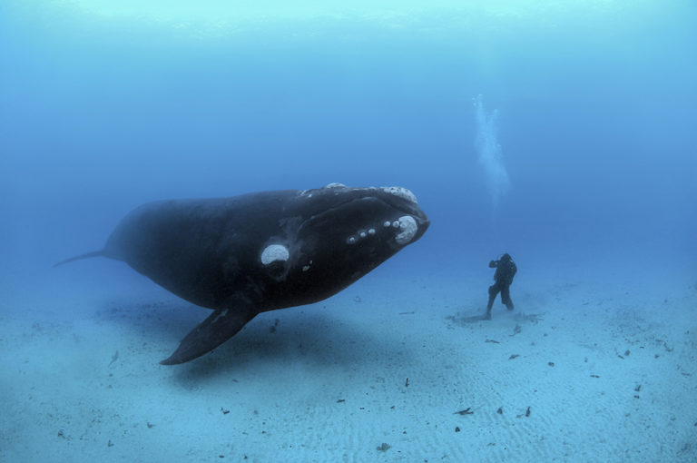

Душа океана
Брайан Скерри (Brian Skerry) – фотожурналист, работающий на National Geographic уже долгие годы. В круг его «обязанностей» входит съемка морской флоры и фауны для популярного журнала.

Брайан Скерри (Brian Skerry) – фотожурналист, работающий на National Geographic уже долгие годы. В круг его «обязанностей» входит съемка морской флоры и фауны для популярного журнала.
За более чем 30 лет карьеры у Скерри накопилось огромное множество фотографий подводного мира, которые он недавно решил собрать вместе в одной книге.
Мы представляем вашему вниманию лишь некоторую часть снимков, попавших в книгу фоторабот Брайана Скерри Ocean Soul («Душа океана»).